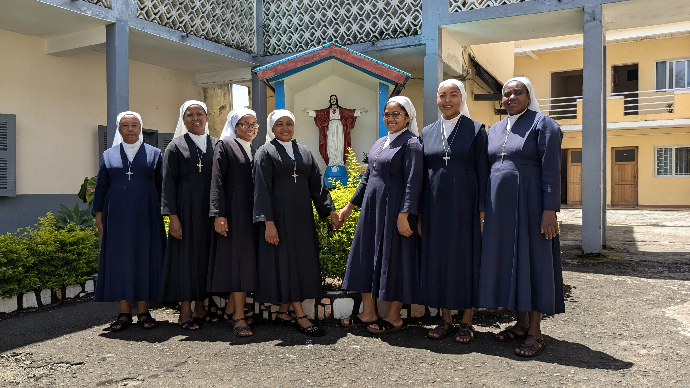
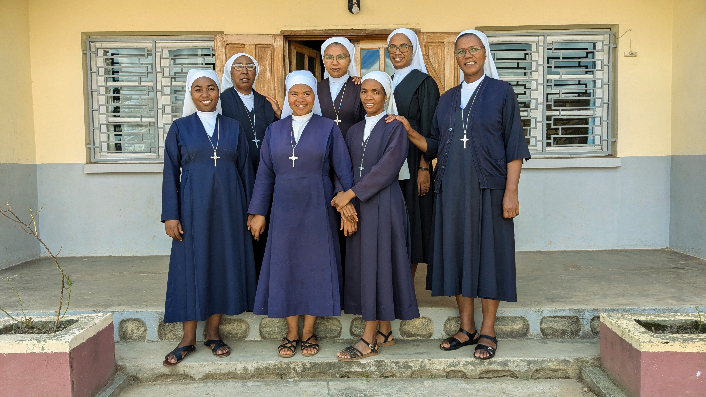
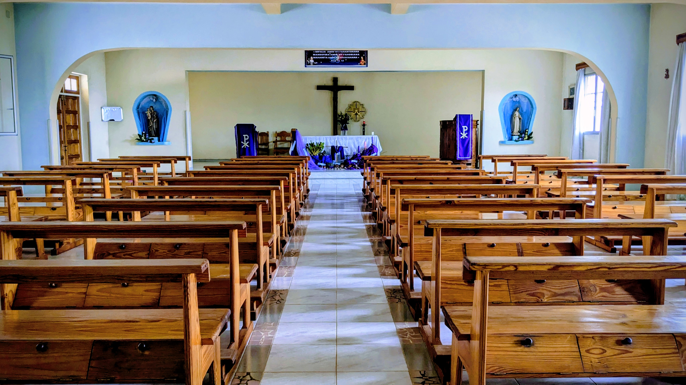

Ireo trano misy ny fikambana
 Diosezin'Antananarivo
Diosezin'Antananarivo
Maison de la délegation - Ampasanimalo
Ny asa ataonay : Misy ny trano itoeran'ireo masera ao anatin'ny birao delegasionina eto Madagasikara. Eo ihany koa ny sekoly mère Marie Schininà
Andoharano - Ivato
Ny asa ataonay : Misy ny trano fandraisam-bahiny , fanaovana ny laretirety ary ihany koa sekoly ambaratonga fototra.
Talatamaty - Fianarantsoa
Mission Principale : Misy sekoly , mamangy ny voafonja , mamahana ny mahantra , atelier lingerie , asa pastoraly .
 Diosezin'i Fianarantsoa
Diosezin'i Fianarantsoa
Ikalamavony - Fianarantsoa
Mission Principale : Misy ny sekoly , mamahana sakafo ary mampianatra mivavaka ny mahantra , mamangy ny be antitra sy the marofy ary manao asa pastoraly .
 Diosezin'i Fianarantsoa
Diosezin'i Fianarantsoa
NOVICIAT - Soamahamanina
Ny asa ataonay : Toeram-panofanana an'ireo tovovavy hiroso ho masera ato aminn'ny fikambanana.
Imerina - Imady
Ny asa ataonay : fanabeazana , asa pastoraly , fitsaboana , famangiana ny be antitra sy ny marefo.
 Diosezin'i Ambanja
Diosezin'i Ambanja
Antsohihy -
Ny asa ataonay : Fanabeazana , asa pastoraly , asa fitoriana ny vaovao mahafaly any ambanivohitra .

Diosezin'i FarafanganaManakara Be
Ny asa ataonay : Fanabeazana , asa pastoraly , famahanana sakafo an'ireo mahantra , fitsidihana trano .
 Diosezin'i Farafangana
Diosezin'i Farafangana
Univérsité ALBA Farafangana
Ny asa ataonay : Fanabeazana , asa pastoraly , famahanana sakafo ho an'ny mpianatra.

Diosezin'i MoramangaAmboasary Gara
Ny asa ataonay : Fanabezana , asa pastoraly , famangiana tokan-trano.
Belobaka
Ny asa ataonay : asa pastoraly , fanabeazana .
Ambatofotsy
Ny asa ataonay : Fanabezana , fitsimbinana ny mahantra sy the marefo , asa pastoraly.
Morondava
Ny asa ataonay : asa pastoraly , fanabeazana.
Diosezin'Antsiranana
DIEGO
Ny asa ataonay : trano fandraisam-bahiny, asa pastoraly.
Bekopaka
Ny asa ataonay : asa pastoraly , fanabeazana, .
Diosezin'Antsirabe
Antanivao
Ny asa ataonay : Fanabeazana , fanomezana sakafo ho an'ny olona sahirana , asa pastoraly.
 Diosezin'i Antananarivo
Diosezin'i Antananarivo
BUREAU DELEGATION
Ny asa ataonay : Mandrindra amin'ny ankapobeny ny fikambana eto an-toerana.

Diocèse d'AmbositraMission Principale : Formation professionnelle des femmes (couture, artisanat) et catéchèse paroissiale.